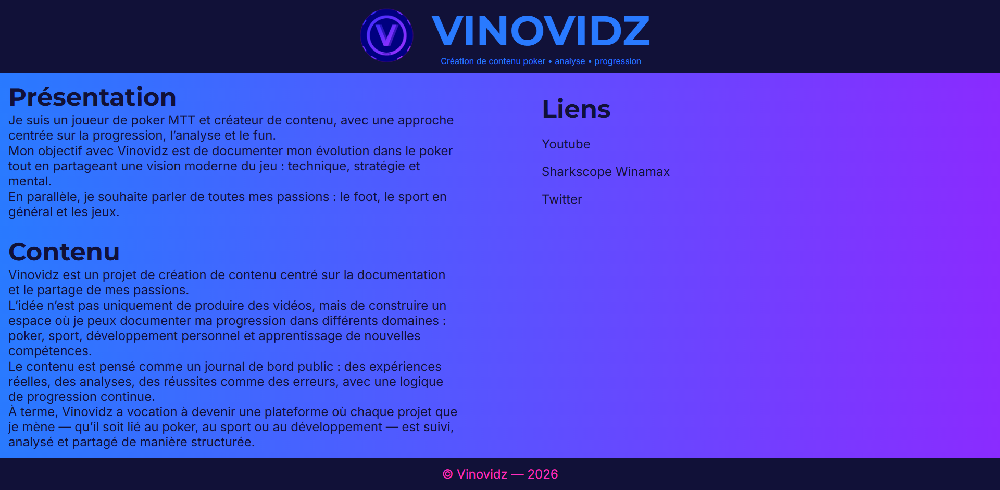
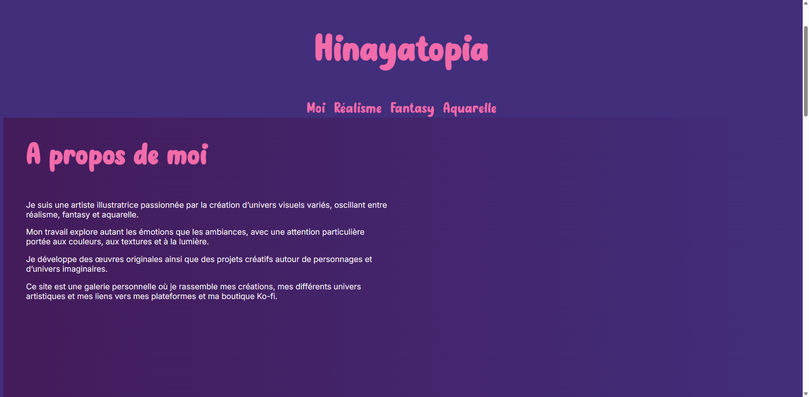
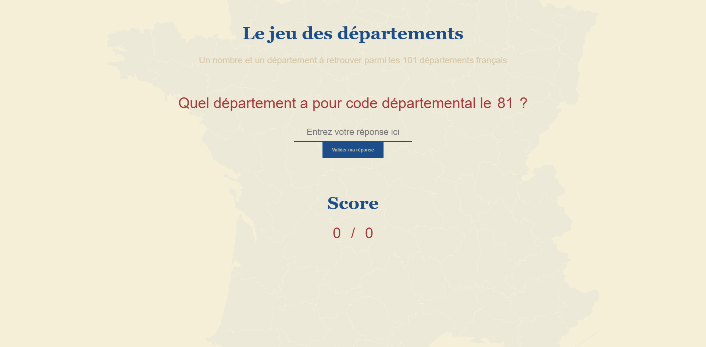
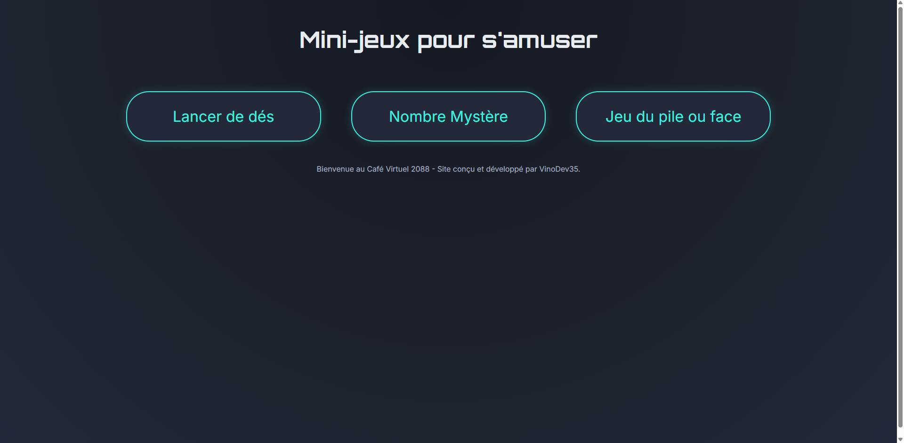
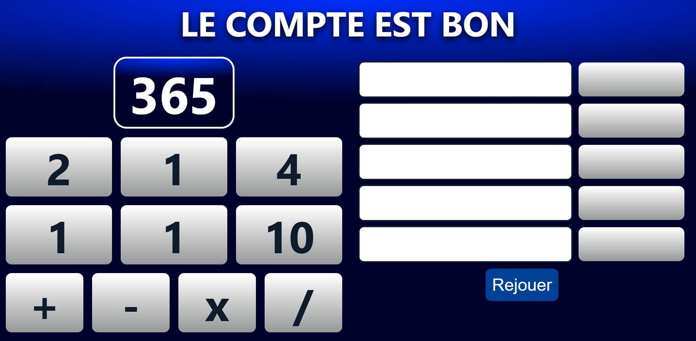
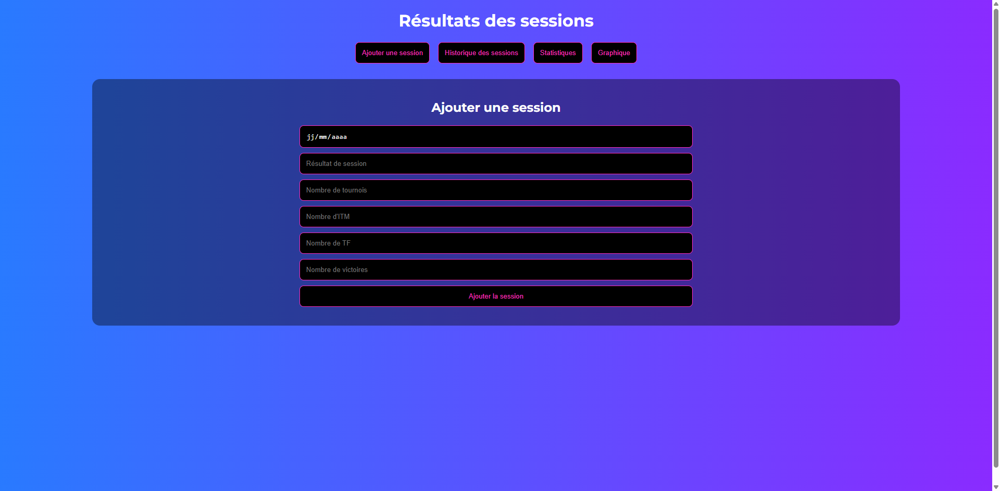

Après plus de 10 ans dans l'analyse scientifique et le laboratoire, je développe aujourd'hui mes compétences en développement web et logiciel à travers un parcours intensif orienté Fullstack.
2008 - Baccalauréat scientifique
Félix le Dantec - Lannion
2012 - Licence Chimie
Université de Rennes 1
Analyste MET
ITGA (2022-2026)
Technicien laboratoire
ITGA (2015-2022)
✓ HTML
✓ CSS
✓ JavaScript
✓ Manipulation du DOM
✓ LocalStorage
✓ Git / GitHub
✓ Création de sites web responsives
Objectifs :
✓ Python
✓ Automatisation
✓ Manipulation de données
✓ Scripts utilitaires
✓ Introduction Data Science
Objectifs :
✓ React
✓ Node.js
✓ Express
✓ API REST
✓ SQL / PostgreSQL
✓ Architecture d'applications web
Objectifs :
✓ Swift / SwiftUI (iOS)
✓ Kotlin Android
✓ Android Studio
✓ Applications multiplateformes
✓ Connexion API mobile

Création d'un site web personnel autour de mon activité
poker et de la création de contenu vidéo.
Technologies :
HTML / CSS / JavaScript

Création d'un site web avec structuration
de contenus et conception d'une interface utilisateur.
Technologies :
HTML / CSS / JavaScript

Jeu interactif permettant de tester
ses connaissances sur les départements français.
Technologies :
JavaScript / DOM

Collection de mini-jeux développés
pour pratiquer la logique programmation
et la manipulation du DOM.
Technologies :
JavaScript / HTML / CSS

Reproduction du célèbre jeu avec
génération de problèmes mathématiques
et résolution algorithmique.
Technologies :
JavaScript

Application web de suivi de performances poker
avec gestion de sessions et visualisation
des résultats.
Technologies :
JavaScript / Data visualisation
Vous souhaitez échanger sur mon parcours,
mes projets ou ma reconversion vers le développement ?
📧
fabien.farhat.dev@gmail.com
💻 GitHub :
github.com/VinoDev35
📍 Pocé-les-Bois, France